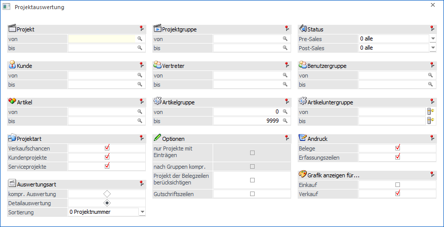
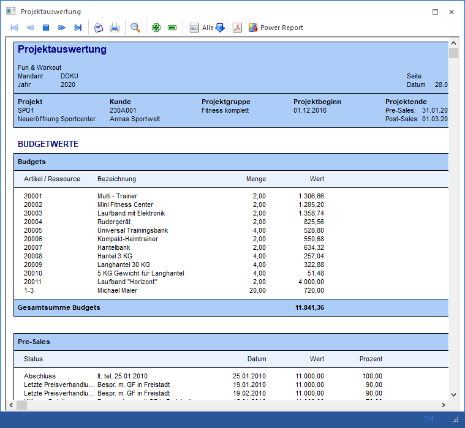
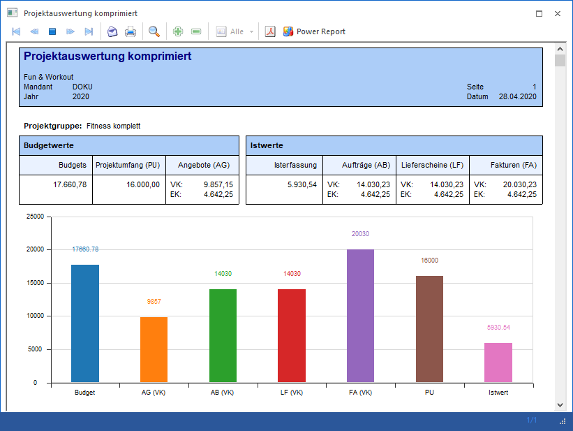
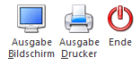

Die Projektauswertung wird über den Menüpunkt…
1 Auswertungen
1 Projektauswertungen
1 Projektauswertung
… geöffnet.

Ø Projekt
Einschränkung auf das Projekt.
Ø Projektgruppe
Eingrenzung auf bestimmte Projektgruppen.
Ø Status
Bei der Auswahl Alle werden alle Projekte unabhängig vom Status angezeigt. Bei der Auswahl eines bestimmten Status werden nur Projekte angezeigt, deren letzter Status gleich der Auswahl ist. So können z.B. alle Projekte ausgewertet werden die zurzeit auf "Termin vereinbaren" stehen.
Ø Kunde
Einschränkung auf den Kunden, dessen Projekte angezeigt werden sollen.
Ø Vertreter
Einschränkung auf den Vertreter (Achtung! Hier wird nach WEB-Benutzern gesucht die einen Vertreter zugeordnet haben.)
Ø Benutzergruppe
Einschränkung auf eine bestimmte Benutzergruppe (Web-Gruppen)
Ø Artikel, Artikelgruppe, Artikeluntergruppe
Es werden nur jene Projekte angezeigt, in denen der selektierte Artikel bzw. die eingegebene Artikelgruppen und Artikeluntergruppen vorkommen.
Ø Projektart
Die zur Auswertung heranzuziehenden Projektarten (Verkaufschancen, Kundenprojekte, Serviceprojekte) können durch Aktivieren der Checkboxen bestimmt werden.
Ø Auswertungsart
Die Auswertung kann wahlweise komprimiert oder detailliert ausgegeben werden (diese Einstellung wird userspezifisch gespeichert. D.h. beim nächsten Öffnen des Fensters wird die letzte Einstellung vorbelegt).
Komprimiert: Es wird für jedes Projekt die Summe der Budget- und Istwerte in Zahlen und mit einer Grafik dargestellt.
Detailliert: Es wird für jedes Projekt eine detaillierte Auswertung der Budget- und Istwerte ausgegeben (gleich der Auswertung im Projektstamm Button Projektinfo).

Ø Sortierung
Die Sortierung der Projekte kann nach…
ü Projektnummer
ü Status Pre-Sales
ü Status Post-Sales
… erfolgen.
Ø Optionen
Im Bereich der Optionen stehen für die gewählten Auswertungsarten weitere Möglichkeiten zur Verfügung.
Für die Auswertungsart "kompr. Auswertung" kann zusätzlich die Option "Nur Projekte mit Einträgen" aktiviert werden. Dadurch werden nur mehr Projekte angezeigt, für die es Einträge im Projektjournal oder Belege gibt.
Beispiel
Um nur jene Projekte zu sehen wo ein bestimmter Artikel vorkommt, kann auf diesen Artikel eingeschränkt werden, und zusätzlich die Option "Nur Projekte mit Einträgen" aktiviert werden. Damit werden die Projekte ohne Einträge nicht angezeigt und von jenen mit Einträgen nur die, bei denen der angegebene Artikel erfasst wurde.
Des Weiteren kann mittels der Option "nach Gruppen kompr.", ebenfalls nur anwählbar bei der Auswertungsart "kompr. Auswertung, erreicht werden, dass alle Soll- und Istwerte einer Projektgruppe summiert werden.

Durch Aktivieren der Option "Projekt der Belegzeilen berücksichtigen" wird festgelegt, dass die abzufragende Projektnummer nicht aus dem Belegkopf Berücksichtigung findet, sondern jene aus der Belegmittelsteilszeile herangezogen wird.
Wird die Option "Gutschriftszeilen" aktiviert, so werden auch Belegmittelteilszeilen vom Zeilentyp "6-Gutschrift" mit ausgegeben.
Ø Sortierung
Die Sortierung der Projekte kann nach…
ü Projektnummer
ü Status Pre-Sales
ü Status Post-Sales
… erfolgen.
Ø Andruck
Durch Aktivieren der entsprechenden Optionen kann bestimmt werden ob nur Belegzeilen, nur Erfassungszeilen oder beides berücksichtigt werden soll.
Ø Grafik anzeigen für
Mit diesen Optionen kann bestimmt werden, ob die Anzeige der Grafik für Einkauf und/oder Verkauf dargestellt werden soll. Mind. eine Auswahl muss gesetzt sein und wird benutzerspezifisch gespeichert.
Buttons

Ø Ausgabe Bildschirm / Drucker
Die Ausgabe kann wahlweise am Drucker (bzw. Spooler) oder am Bildschirm erfolgen.
Ø Ende
Mittels Ende-Button kann der Menüpunkt geschlossen werden.
Hinweis - Eröffnungszeilen
Wenn bei einem Serviceprojekt Artikel hinzugefügt werden (im Projektestamm), dann werden diese bei den Istzeiten mit dem Hinweistext "Serviceprojekt-Eröffnung" angezeigt. Werden die Artikel nicht direkt eingetragen, sondern über einen Beleg hinzugefügt, der die Projektnummer hinterlegt hat, dann werden diese nicht bei den Istwerten als Eröffnungszeilen aufgelistet, da diese dann bereits beim Beleg angezeigt werden.
Hinweis - Soll-Ist Vergleich
Im Soll-Ist-Vergleich der unterhalb der Istzeilen angezeigt wird, werden nur die Istzeilen mit dem Flag "wird intern verrechnet - kalkulierter Aufwand" angezeigt.